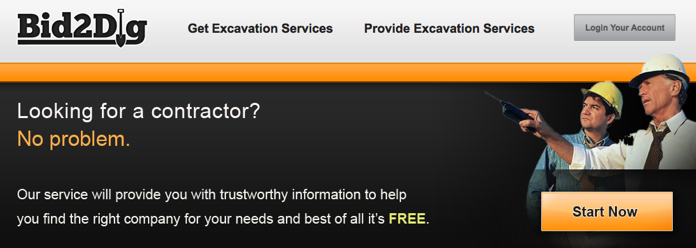
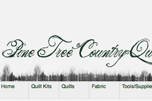

Joseph W. Colby
Main Navigation
The work I produce
How you can contact me
Hello there! You probably should check
this
out too or
this
!
Main Content
Quick View of Portfolio
Bid2Dig[Beta]

Sphlickr Air Application
Sphlickr Mobile
Green and Free
Pine Tree Country Quilts

Squiddy
Consume Your Happiness
Secondary Content
My Resume
My Networks(Social Media)